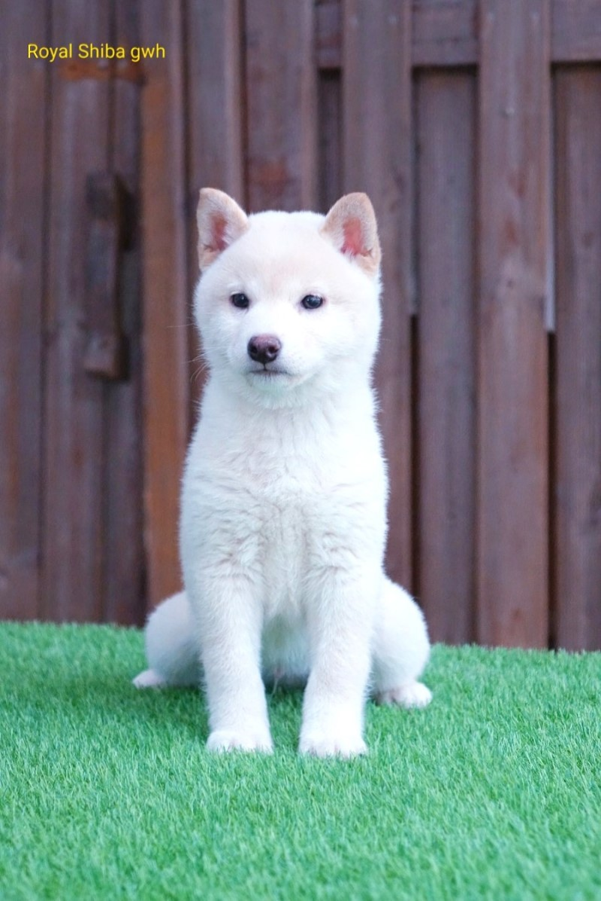
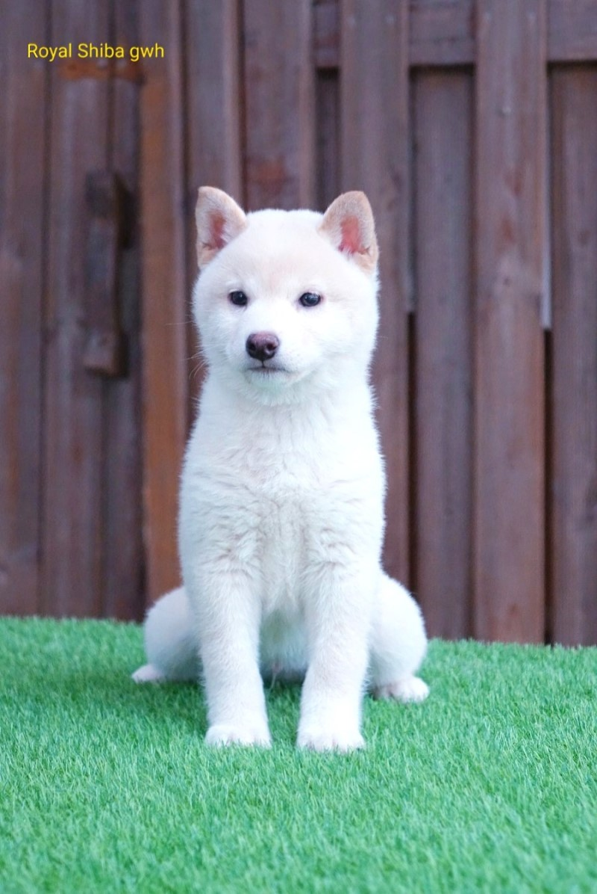

일본산의 견종으로 인터넷을 돌아다니다 진돗개 같이 생긴 누렁이가 묘한 표정이나 빵 터지는 자세를 취한 짤이 있다면 그 주인공은 시바견이다. 나무위키 참고
일본에서 가장 많이 기른다는 견종이다. 6종의 일본 전통 견종 중 약 80%가 시바견이라고. 매체상으로는 일본의 다른 전통 견종 아키타견이 더 많이 언급되었지만 닌텐독스 같은 비교적 최근의 반려견 관련 컨텐츠에서는 점차 시바견 쪽을 우대하고 있는 것 같다.
 

 시바견은 귀엽다 정말
시바견은 귀엽다 정말